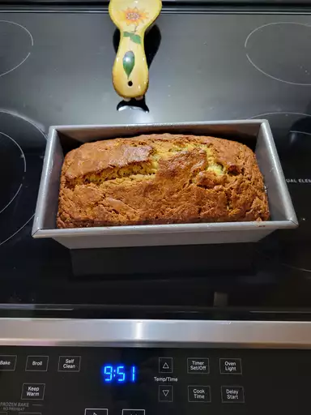

Banana Bread

Description
Our most popular banana bread is moist, delicious, and absolutely packed with banana flavor. This Allrecipes community favorite will quickly become your go-to banana bread recipe!
Ingredients
- 2 cups all-purpose flour
- 1 teaspoon baking soda
- ¼ teaspoon salt
- ¾ cup brown sugar
- ½ cup butter
- 2 eggs, beaten
- 2 ⅓ cups mashed overripe bananas
Steps
- Preheat the oven to 350 degrees F (175 degrees C). Lightly grease a 9x5-inch loaf pan.
- Combine flour, baking soda, and salt in a large bowl. Beat brown sugar and butter with an electric mixer in a separate large bowl until smooth. Stir in eggs and mashed bananas until well blended. Stir banana mixture into flour mixture until just combined. Pour batter into the prepared loaf pan.
- Bake in the preheated oven until a toothpick inserted into the center comes out clean, about 60 minutes. Let bread cool in pan for 10 minutes, then turn out onto a wire rack to cool completely.
Home